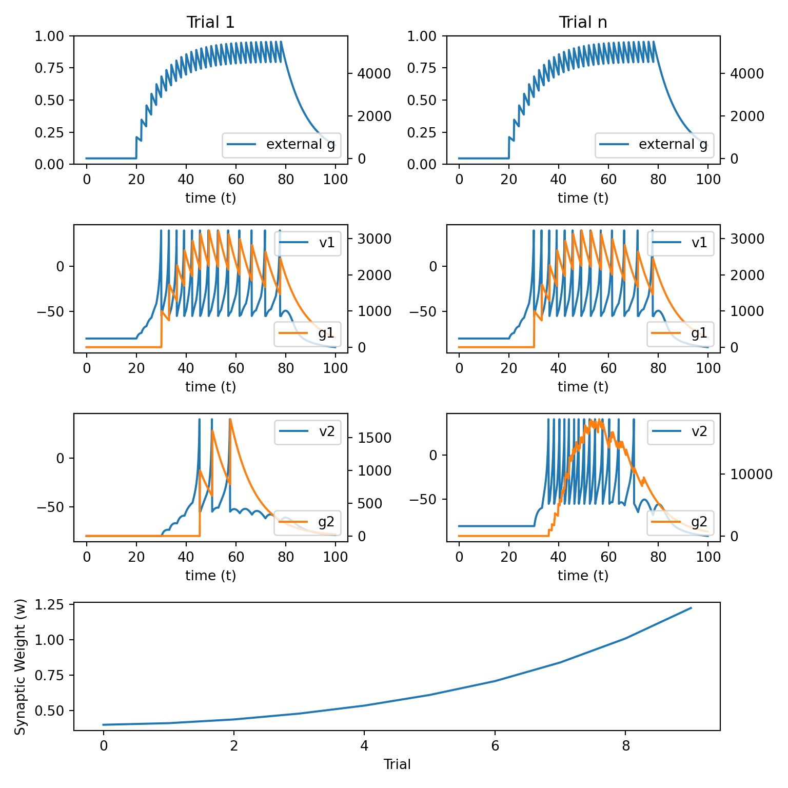
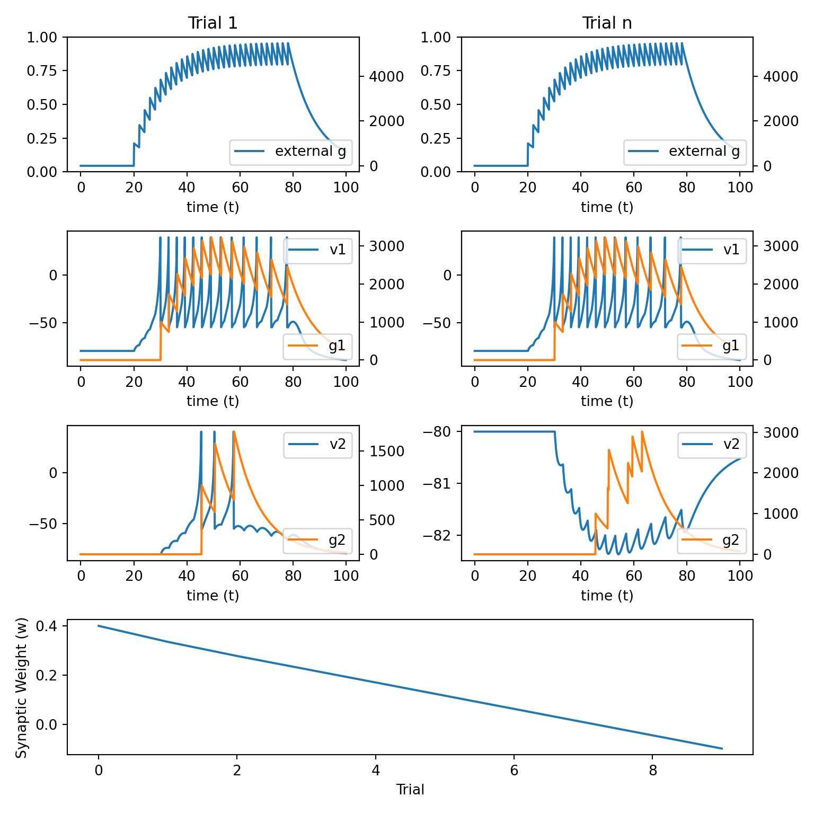
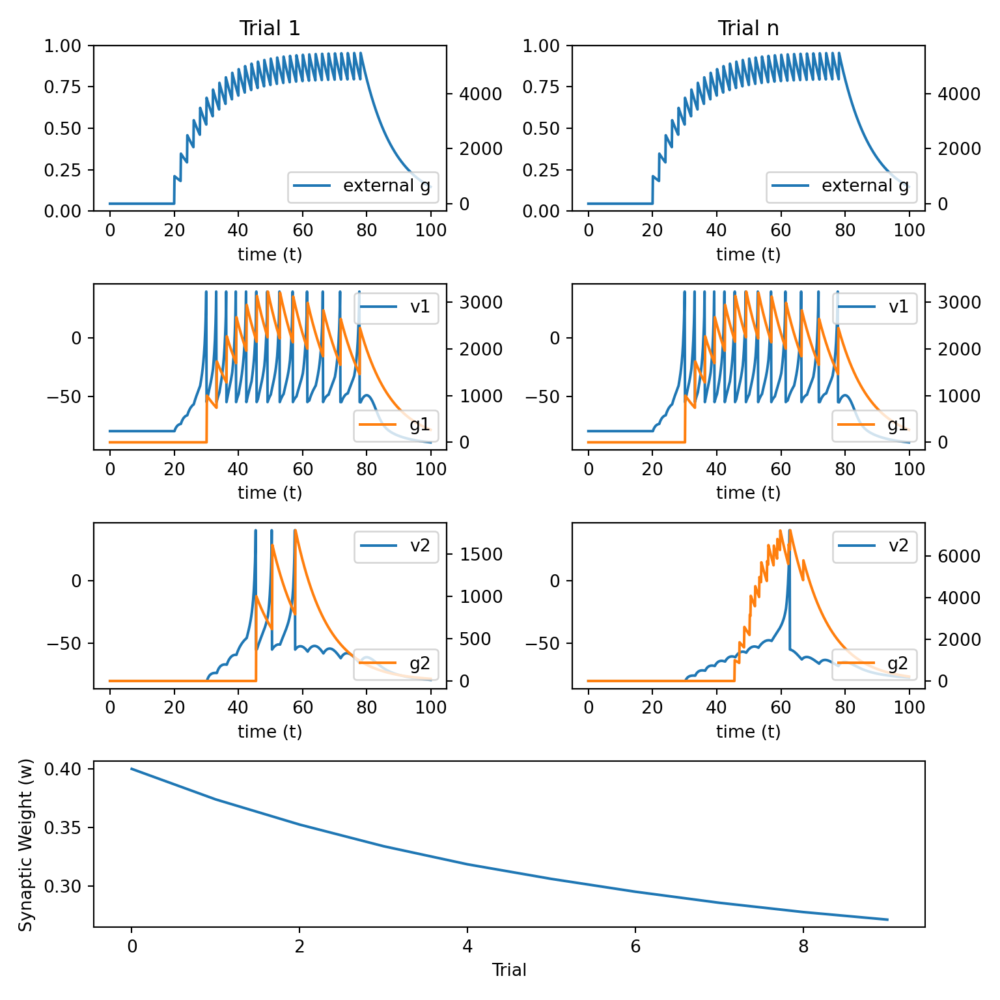

9 Synpatic Plasticity
Synaptic plasticity refers to changes in the connection weights between neurons.
Long-term potentiation (LTP) is synaptic strengthening.
Long-term depression (LTD) is synaptic strengthening.
Synaptic plasticity comes in many different forms and operates by different computational principles in different brain regions and between different cell types.
In this lecture, we will explore a few different types of Hebbian synaptic plasticity.
9.1 Python helper functions
We will simulate a two neuron network in which neuron 1 projects to neuron 2, the first neuron is driven by an external input, and the connection weight between neuron 1 and neuron 2 is plastic.
Since we will vary the rules that govern plasticity between neuron 1 and neuron 2, we will first write a bit of
pythoncode that will help us avoid rewriting the same lines of code over and over.
import numpy as np
import matplotlib.pyplot as plt
import matplotlib.gridspec as gridspec
def init_arrays():
v1 = np.zeros(n)
u1 = np.zeros(n)
g1 = np.zeros(n)
spike1 = np.zeros(n)
v1[0] = vr
v2 = np.zeros(n)
u2 = np.zeros(n)
g2 = np.zeros(n)
spike2 = np.zeros(n)
v2[0] = vr
w_01 = 0.4 * np.ones(n_trials)
w_12 = 0.4 * np.ones(n_trials)
g_record = np.zeros((n_trials, n))
v1_record = np.zeros((n_trials, n))
g1_record = np.zeros((n_trials, n))
v2_record = np.zeros((n_trials, n))
g2_record = np.zeros((n_trials, n))
return {
'v1': v1,
'u1': u1,
'g1': g1,
'spike1': spike1,
'v2': v2,
'u2': u2,
'g2': g2,
'spike2': spike2,
'w_01': w_01,
'w_12': w_12,
'g_record': g_record,
'v1_record': v1_record,
'g1_record': g1_record,
'v2_record': v2_record,
'g2_record': g2_record
}
def plot_results():
fig = plt.figure(figsize=(8, 8))
gs = gridspec.GridSpec(4, 2)
ax00 = fig.add_subplot(gs[0, 0])
ax10 = fig.add_subplot(gs[1, 0])
ax20 = fig.add_subplot(gs[2, 0])
ax01 = fig.add_subplot(gs[0, 1])
ax11 = fig.add_subplot(gs[1, 1])
ax21 = fig.add_subplot(gs[2, 1])
ax3 = fig.add_subplot(gs[3, :])
ax1 = ax00
ax2 = ax00.twinx()
ax2.plot(t, g_record[0], 'C0', label='external g')
ax2.legend(loc='lower right')
ax1.set_title('Trial 1')
ax1.set_xlabel('time (t)')
ax1 = ax10
ax2 = ax10.twinx()
ax1.plot(t, v1_record[0], 'C0', label='v1')
ax2.plot(t, g1_record[0], 'C1', label='g1')
ax1.legend(loc='upper right')
ax2.legend(loc='lower right')
ax1.set_xlabel('time (t)')
ax1 = ax20
ax2 = ax20.twinx()
ax1.plot(t, v2_record[0], 'C0', label='v2')
ax2.plot(t, g2_record[0], 'C1', label='g2')
ax1.legend(loc='upper right')
ax2.legend(loc='lower right')
ax1.set_xlabel('time (t)')
ax1 = ax01
ax2 = ax01.twinx()
ax2.plot(t, g_record[0], 'C0', label='external g')
ax2.legend(loc='lower right')
ax1.set_title('Trial n')
ax1.set_xlabel('time (t)')
ax1 = ax11
ax2 = ax11.twinx()
ax1.plot(t, v1_record[-2], 'C0', label='v1')
ax2.plot(t, g1_record[-2], 'C1', label='g1')
ax1.legend(loc='upper right')
ax2.legend(loc='lower right')
ax1.set_xlabel('time (t)')
ax1 = ax21
ax2 = ax21.twinx()
ax1.plot(t, v2_record[-2], 'C0', label='v2')
ax2.plot(t, g2_record[-2], 'C1', label='g2')
ax1.legend(loc='upper right')
ax2.legend(loc='lower right')
ax1.set_xlabel('time (t)')
ax3.plot(np.arange(0, n_trials, 1), w_12)
ax3.set_xlabel('Trial')
ax3.set_ylabel('Synaptic Weight (w)')
plt.tight_layout()
plt.show()
def simulate_network(update_weight_func):
for j in range(n_trials - 1):
trl = j
for i in range(1, n):
dt = t[i] - t[i - 1]
# external input
dgdt = (-g[i - 1] + psp_amp * spike[i - 1]) / psp_decay
g[i] = g[i - 1] + dgdt * dt
# neuron 1
dvdt1 = (k * (v1[i - 1] - vr) *
(v1[i - 1] - vt) - u1[i - 1] + w_01[trl] * g[i - 1]) / C
dudt1 = a * (b * (v1[i - 1] - vr) - u1[i - 1])
dgdt1 = (-g1[i - 1] + psp_amp * spike1[i - 1]) / psp_decay
v1[i] = v1[i - 1] + dvdt1 * dt
u1[i] = u1[i - 1] + dudt1 * dt
g1[i] = g1[i - 1] + dgdt1 * dt
if v1[i] >= vpeak:
v1[i - 1] = vpeak
v1[i] = c
u1[i] = u1[i] + d
spike1[i] = 1
# neuron 2
dvdt2 = (k * (v2[i - 1] - vr) *
(v2[i - 1] - vt) - u2[i - 1] + w_12[trl] * g1[i - 1]) / C
dudt2 = a * (b * (v2[i - 1] - vr) - u2[i - 1])
dgdt2 = (-g2[i - 1] + psp_amp * spike2[i - 1]) / psp_decay
v2[i] = v2[i - 1] + dvdt2 * dt
u2[i] = u2[i - 1] + dudt2 * dt
g2[i] = g2[i - 1] + dgdt2 * dt
if v2[i] >= vpeak:
v2[i - 1] = vpeak
v2[i] = c
u2[i] = u2[i] + d
spike2[i] = 1
# update synaptic weights
delta_w = update_weight_func()
w_12[trl + 1] = w_12[trl] + delta_w
# store trial info
g_record[trl, :] = g
v1_record[trl, :] = v1
g1_record[trl, :] = g1
v2_record[trl, :] = v2
g2_record[trl, :] = g2
plot_results()
n_trials = 10
trl = 0
tau = 0.1
T = 100
t = np.arange(0, T, tau)
n = t.shape[0]
C = 50
vr = -80
vt = -25
vpeak = 40
k = 1
a = 0.01
b = -20
c = -55
d = 150
psp_amp = 1e5
psp_decay = 10
g = np.zeros(n)
spike = np.zeros(n)
spike[200:800:20] = 19.2 Hebbian Learning 1
\[ w_{ij}(n+1) = w_{ij}(n) + \alpha A_i(n) A_j(n) \]
Neurons that fire together wire together.
Simple equation that can only generate LTP. It cannot generate LTD.
Weakness is that it predicts all plastic synapses ultimately grow to infinity. This is because \(A_i(n)>0\) and \(A_j(n)>0\).
The following
Pythoncode implements this learning rule.
alpha = 3e-14
def update_weight_1():
pre = g1.sum()
post = g2.sum()
delta_w = alpha * pre * post
return delta_w- We next initialise the needed arrays and simulate the network using the above learning rule.
array_dict = init_arrays()
v1 = array_dict['v1']
u1 = array_dict['u1']
g1 = array_dict['g1']
spike1 = array_dict['spike1']
v2 = array_dict['v2']
u2 = array_dict['u2']
g2 = array_dict['g2']
spike2 = array_dict['spike2']
w_01 = array_dict['w_01']
w_12 = array_dict['w_12']
g_record = array_dict['g_record']
v1_record = array_dict['v1_record']
g1_record = array_dict['g1_record']
v2_record = array_dict['v2_record']
g2_record = array_dict['g2_record']
update_weight_func = update_weight_1
alpha = 3e-14
simulate_network(update_weight_func)
9.3 Hebbian Learning 2
\[ \begin{align} w_{ij}(n+1) &= w_{ij}(n) \\ & + \alpha H[A_j(n) - \theta] A_i(n)\\ & - \beta H[\theta - A_j(n)] A_i(n) \end{align} \]
Simple augmentation of the Hebbian learning rule above.
Assumes an activity threshold \(\theta\) that can cause either LTP or LTD to occur.
\(H[z(x)]\) is the Heaviside function and is \(0\) if \(z(x)<0\) and is \(z(x)\) otherwise.
Thus, this equation says that if the activation in the postsynapctic neuron is strong enough, then LTP will occur. If there is only weak activation (i.e., less than \(\theta\)) then LTD will occur.
This is an improvement because it is still quite simple and has both LTP and LTD. However, it can still grow to infinity or – even more strangely – negative infinity.
The following
Pythoncode implements this learning rule.
alpha = 3e-14
beta = 3e-14
theta = 2e6 # make this small for LTP or large for LTD
def update_weight_2():
pre = g1.sum()
post_ltp = np.clip(g2.sum() - theta, 0, None)
post_ltd = np.clip(theta - g2.sum(), 0, None)
delta_w = alpha * pre * post_ltp - beta * pre * post_ltd
return delta_w- We next initialise the needed arrays and simulate the network using the above learning rule.
array_dict = init_arrays()
v1 = array_dict['v1']
u1 = array_dict['u1']
g1 = array_dict['g1']
spike1 = array_dict['spike1']
v2 = array_dict['v2']
u2 = array_dict['u2']
g2 = array_dict['g2']
spike2 = array_dict['spike2']
w_01 = array_dict['w_01']
w_12 = array_dict['w_12']
g_record = array_dict['g_record']
v1_record = array_dict['v1_record']
g1_record = array_dict['g1_record']
v2_record = array_dict['v2_record']
g2_record = array_dict['g2_record']
update_weight_func = update_weight_2
simulate_network(update_weight_func)
9.4 Hebbian Learning 3
\[ \begin{align} w_{ij}(n+1) &= w_{ij}(n) \\ &+ \alpha H[A_j(n)-\theta] [A_i(n)] [1 - w_{ij}(n)] \\ &- \beta H[\theta-A_j(n)] [A_i(n)] [w_{ij}(n)] \end{align} \]
Add a rate-limiting terms to prevent growth to \(\pm\) infinity
The rest is the same as above.
The following
Pythoncode implements this learning rule.
alpha = 3e-14
beta = 3e-14
theta = 2e6
def update_weight_3():
pre = g1.sum()
post_ltp = np.clip(g2.sum() - theta, 0, None) * (1 - w_12[trl])
post_ltd = np.clip(theta - g2.sum(), 0, None) * w_12[trl]
delta_w = alpha * pre * post_ltp - beta * pre * post_ltd
return delta_w- We next initialise the needed arrays and simulate the network using the above learning rule.
array_dict = init_arrays()
v1 = array_dict['v1']
u1 = array_dict['u1']
g1 = array_dict['g1']
spike1 = array_dict['spike1']
v2 = array_dict['v2']
u2 = array_dict['u2']
g2 = array_dict['g2']
spike2 = array_dict['spike2']
w_01 = array_dict['w_01']
w_12 = array_dict['w_12']
g_record = array_dict['g_record']
v1_record = array_dict['v1_record']
g1_record = array_dict['g1_record']
v2_record = array_dict['v2_record']
g2_record = array_dict['g2_record']
update_weight_func = update_weight_3
simulate_network(update_weight_func)## <string>:2: RuntimeWarning: More than 20 figures have been opened. Figures created through the pyplot interface (`matplotlib.pyplot.figure`) are retained until explicitly closed and may consume too much memory. (To control this warning, see the rcParam `figure.max_open_warning`). Consider using `matplotlib.pyplot.close()`.
9.5 Hebbian STDP
\[ \begin{align} w_{ij}(n+1) &= w_{ij}(n) \\ &+ \alpha H[A_j(n)-\theta] [A_i(n)] [1 - w_{ij}(n)] \Delta \\ &- \beta H[\theta-A_j(n)] [A_i(n)] [w_{ij}(n)] \end{align} \]
\[ \begin{align} \Delta = \begin{cases} e^{-(T_{\text{post}} - T_{\text{pre}}) / \tau_+} &\text{ if } T_{\text{post}} > T_{\text{pre}} \\ -e^{ (T_{\text{post}} - T_{\text{pre}}) / \tau_-} &\text{ if } T_{\text{post}} < T_{\text{pre}} \\ \end{cases} \end{align} \]
Synaptic plasticity depends on the timing of spikes as well as the overall magnitude of neural activations between pre and postsynatpic neurons.
LTP is caused if the presynaptic neuron fires before the postsynaptic neuron. LTD is caused in the inverse situation.
The magnitude of LTP / LTD falls off exponentially as the time between pre and postsynaptic spikes gets larger.
The following
Pythoncode implements this learning rule.
alpha = 3e-14
beta = 3e-14
theta = 2e6
tau_pos = 10
tau_neg = 10
def update_weight_stdp():
delta_stdp = 0
n_pre_spikes = spike1.sum().astype(int)
n_post_spikes = spike2.sum().astype(int)
pre_spike_times = t[spike1==1]
post_spike_times = t[spike2==1]
for i in range(n_pre_spikes):
for j in range(n_post_spikes):
T_pre = pre_spike_times[i]
T_post = post_spike_times[j]
delta_T = T_post - T_pre
if delta_T > 0:
delta_stdp += np.exp(-(delta_T)/tau_pos)
else:
delta_stdp += np.exp((delta_T)/tau_neg)
pre = g1.sum()
post_above_thresh = np.clip(g2.sum() - theta, 0, None) * (1 - w_12[trl]) * delta_stdp
post_below_thresh = np.clip(theta - g2.sum(), 0, None) * w_12[trl]
delta_w = alpha * pre * post_above_thresh - beta * pre * post_below_thresh
return delta_w- We next initialise the needed arrays and simulate the network using the above learning rule.
array_dict = init_arrays()
v1 = array_dict['v1']
u1 = array_dict['u1']
g1 = array_dict['g1']
spike1 = array_dict['spike1']
v2 = array_dict['v2']
u2 = array_dict['u2']
g2 = array_dict['g2']
spike2 = array_dict['spike2']
w_01 = array_dict['w_01']
w_12 = array_dict['w_12']
g_record = array_dict['g_record']
v1_record = array_dict['v1_record']
g1_record = array_dict['g1_record']
v2_record = array_dict['v2_record']
g2_record = array_dict['g2_record']
update_weight_func = update_weight_stdp
simulate_network(update_weight_func)